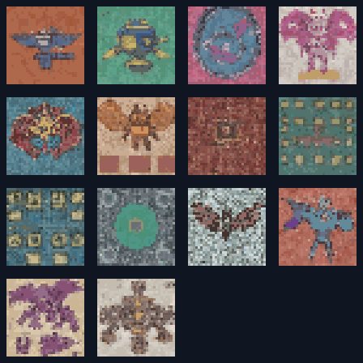

DEMON ATTACK · RESEARCH BRANCH
Local Model Asset Comparison
Sprite candidates · original and Astra-crafted variants

Each square reduces a 512×512 model output to a 32×32 logical preview, quantizes to at most 16 colors, then enlarges with nearest-neighbor sampling. Originals stay untouched beside their Astra-crafted variants; previews expose the model output without repairing it.
Portrait background comparison
Each local candidate is paired with the current in-game sector painting at the same 2:3 aspect ratio. The generated concept is lower resolution than production art and remains research-only.
python3 tools/prepare_local_image_candidates.py from the project root, then rebuild the local preview.